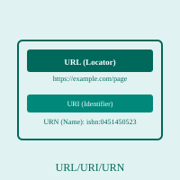

URL/URI/URN

URL, URI, and URN are related but distinct concepts used to identify and locate resources on the Internet. A URL (Uniform Resource Locator) is the most familiar of these terms and is used to specify the location of a resource on the World Wide Web. URLs follow a specific format that includes the protocol (such as https://), the domain name (such as example.com), and the path to the specific resource (such as /page/article). When you type a web address into your browser's address bar, you are entering a URL that tells your browser where to find the resource you want to access.
A URI (Uniform Resource Identifier) is a broader concept that encompasses both URLs and URNs. A URI is any string of characters that identifies a particular resource on the Internet. The key distinction is that a URI provides a way to identify a resource, but it doesn't necessarily provide the means to locate it. A URL is a specific type of URI that includes the protocol and location information needed to retrieve the resource. In practice, most web applications use URLs to access resources, but understanding the URI concept is important for advanced web technologies and semantic web applications.
A URN (Uniform Resource Name) is a URI that provides a permanent, location-independent identifier for a resource. Unlike URLs, which may change if a resource moves to a different server, a URN remains constant regardless of the resource's physical location. An example of a URN is ISBN numbers used for books, where the format ISBN:0451450523 uniquely identifies a specific book without indicating where that book can be found. While URNs are theoretically powerful for long-term resource identification, they have not been widely adopted on the Web. However, understanding all three concepts helps developers and users appreciate the different ways resources can be identified and accessed on the Internet.